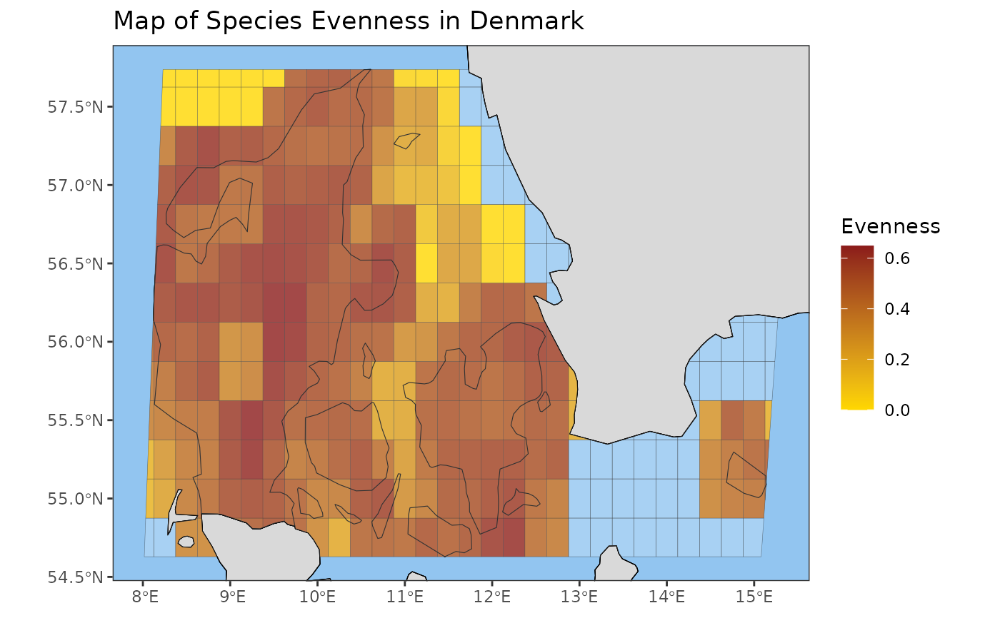

Creates a map visualization of a calculated multi-species
biodiversity indicator. Requires an indicator_map object as input. To plot
single-species indicators, use the plot_species_map() function
instead.
Usage
plot_map(
x,
title = "auto",
auto_title = NULL,
leg_label_default = NULL,
xlims = NULL,
ylims = NULL,
trans = NULL,
bcpower = NULL,
breaks = NULL,
labels = NULL,
output_crs = NULL,
crop_to_grid = NULL,
crop_by_region = FALSE,
ocean_fill_colour = NULL,
land_fill_colour = NULL,
grid_fill_colour = NULL,
grid_line_colour = NULL,
grid_outline_colour = NULL,
grid_line_width = NULL,
grid_outline_width = NULL,
grid_fill_transparency = NULL,
grid_line_transparency = NULL,
legend_title = NULL,
legend_limits = NULL,
legend_title_wrap_length = 10,
title_wrap_length = 60,
visible_gridlines = TRUE,
visible_grid_outline = FALSE,
visible_panel_gridlines = FALSE,
complete_grid_outline = FALSE,
map_expansion_factor = 0.5,
layers = NULL,
layer_colours = NULL,
layer_fill_colours = NULL,
scale = c("medium", "small", "large")
)Arguments
- x
An 'indicator_map' object containing multi-species indicator values associated with map grid cells. This is a required parameter with no default.
- title
(Optional) Plot title. Replace "auto" with your own title if you want a custom title or if calling the function manually.
- auto_title
(Optional) Text for automatic title generation, provided by an appropriate S3 method (if calling the function manually, leave as NULL).
- leg_label_default
(Optional) Default label for the legend, provided by an appropriate S3 method (if calling the function manually, leave as NULL).
- xlims
(Optional) Custom x-axis limits.
- ylims
(Optional) Custom y-axis limits.
- trans
(Optional) Scale transformation for the fill gradient (e.g., 'log').
- bcpower
(Optional) Power parameter for the Box-Cox, modulus, or Yeo-Johnson transformations.
- breaks
(Optional) Break points for the legend scale.
- labels
(Optional) Labels for legend scale break points.
- output_crs
(Optional) Coordinate Reference System (CRS) for the output map. Can be specified as an EPSG code (e.g., 4326) or a proj4string. If NULL (default), the original CRS of the indicator_map object will be used.
- crop_to_grid
(Optional) If TRUE, the grid will determine the edges of the map. If FALSE, a buffer will be added around the grid. If NULL (default), will be set to TRUE if map_level is "cube", otherwise FALSE.
- crop_by_region
(Optional) If TRUE, the map will be cropped to the specified region when calculating the indicator_map. Default is FALSE. Note: this requires that a region was specified when calculating the indicator_map.
- ocean_fill_colour
(Optional) Colour for the ocean area outside of the grid. Default is "lightblue".
- land_fill_colour
(Optional) Colour for the land area outside of the grid. Default is "grey85".
- grid_fill_colour
(Optional) Colour for empty grid cells (non-empty grid cells will be coloured according to their indicator value). Default is "transparent".
- grid_line_colour
(Optional) Colour for the grid lines. Default is "black". If visible_gridlines is set to FALSE, this setting will have no effect.
- grid_outline_colour
(Optional) Colour for the grid outline. Default is "black". If visible_grid_outline is set to FALSE, this setting will have no effect.
- grid_line_width
(Optional) Width of the grid lines. Default is 0.1.
- grid_outline_width
(Optional) Width of the grid outline. Default is 0.5.
- grid_fill_transparency
(Optional) Transparency of the grid fill colour for empty grid cells (0 = fully transparent, 1 = fully opaque). If visible_gridlines is set to TRUE, default is 0.2. Otherwise, default is 0. *Note that this setting does NOT apply to grid cells with indicator values!
- grid_line_transparency
(Optional) Transparency of the grid line colour (0 = fully transparent, 1 = fully opaque). Default is 0.5. If visible_gridlines is set to FALSE, this setting will have no effect. *Note that this setting does NOT apply to the grid outline!
- legend_title
(Optional) Title for the plot legend.
- legend_limits
(Optional) Limits for the legend scale.
- legend_title_wrap_length
(Optional) Maximum legend title length before wrapping to a new line.
- title_wrap_length
(Optional) Maximum title length before wrapping to a new line.
- visible_gridlines
(Optional) Show gridlines between cells. Default is TRUE.
- visible_grid_outline
(Optional) Show outline around grid. Default is FALSE.
- visible_panel_gridlines
(Optional) Show ggplot panel gridlines. Default is FALSE.
- complete_grid_outline
(Optional) If TRUE, the grid outline will be extended as a complete rectangle, even if the grid is not. Default is FALSE.
- map_expansion_factor
(Optional) Factor to expand the map limits beyond the grid limits. This does NOT expand the boundaries of the plot, it only affects where the crop is applied. If this value is too small, some land may be visibly cut off due to map distortion caused by projections. A larger value will extend the bounding box for cropping to prevent this. Must be a positive number. (Default is 0.5). This should be enough for most projections, but you can increase this value if you are using an extreme projection and find that some land is visibly cut off.
- layers
(Optional) Additional rnaturalearth layers to plot, e.g. c("reefs", "playas").
- layer_colours
(Optional) Colours for the outlines of additional layers. Must be the same length as 'layers'.
- layer_fill_colours
(Optional) Fill colours for the additional layers. Must be the same length as 'layers'.
- scale
(Optional) Scale of Natural Earth data ("small", "medium", or "large"). Default is 'medium'.
Value
A ggplot object representing the biodiversity indicator map. Can be customized using ggplot2 functions.
Examples
evenness_map <- pielou_evenness_map(example_cube_1,
level = "country",
region = "Denmark")
plot_map(x = evenness_map,
title = "Map of Species Evenness in Denmark",
legend_title = "Evenness")
